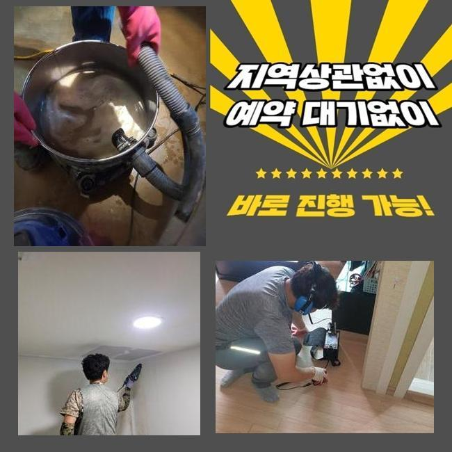
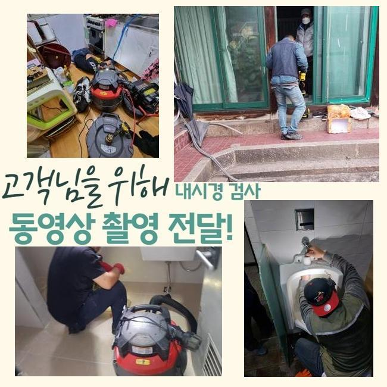
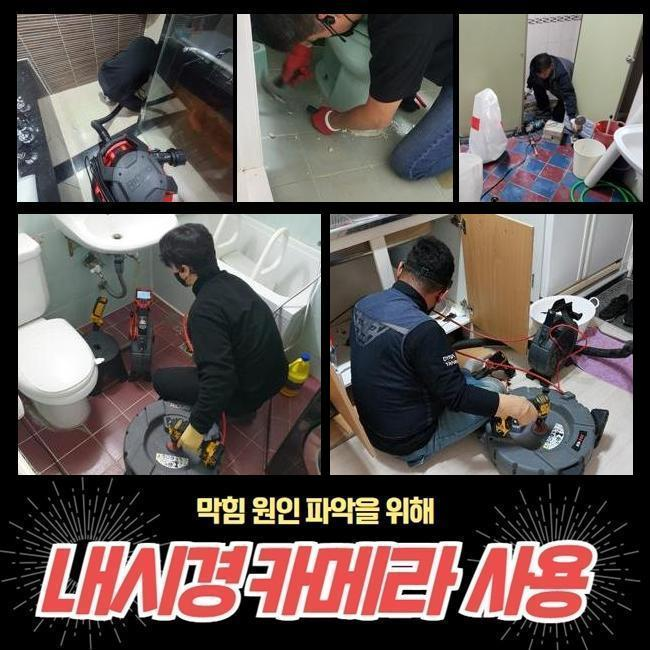
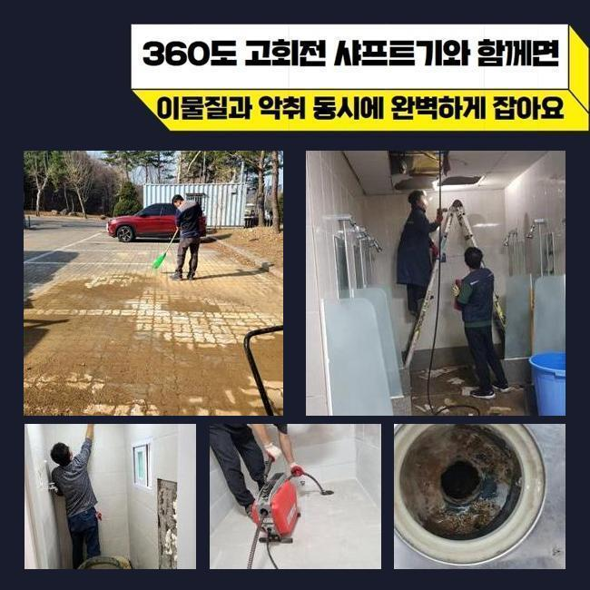
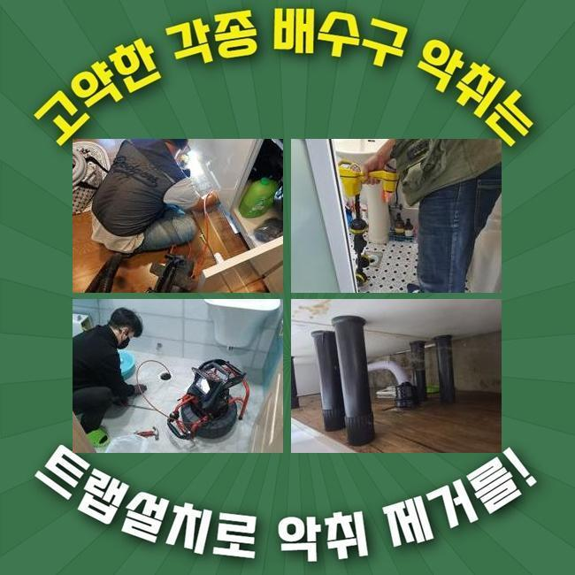
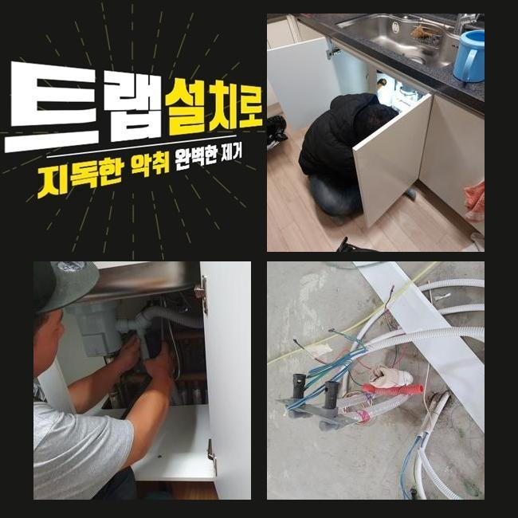
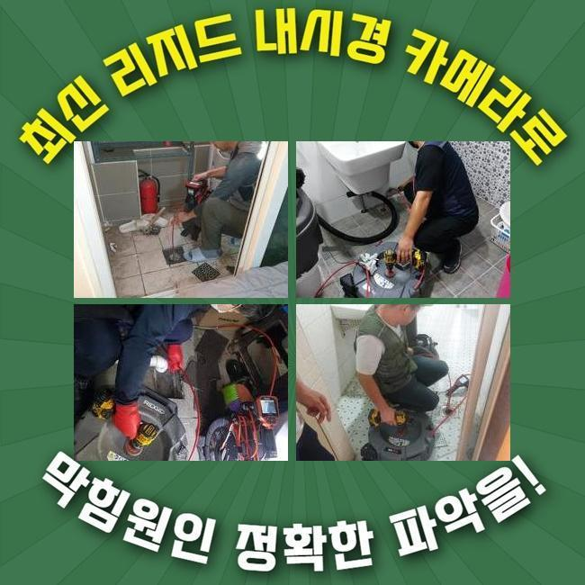

🏠 양평 강상면변기막힘 개군면 냄새차단 물샘전문업체
용인 변기막힘 전문 시공 후기

📋 작업 개요
- 위치: 용인
- 서비스 유형: 변기막힘, 하수구막힘, 배관막힘, 누수수리, 뚫는업체, 배관청소, 고압세척, 악취차단
- 작업 일시: 2024. 12. 13. 14:20
- 업체명: 하수구수사대 (010-5615-2118)
🔍 문제 상황
양평 강상면변기막힘 개군면 냄새차단 물샘전문업체
아파트 하수관이 고장나면 그 힘듦은 정말 말할 것도 없는데요
이렇다할 하자가 없던 하수구가 뜬금없이 고장나기도 하지만 내부 잔수가 범람하는 일까지 일괄적으로 생기기도 합니다
사태가 터져버리기 전에 매일같이 사용하는 하수구를 치워주는 팁도 있으니 공유해드린 조언을 들으셔서 고객님 댁의 시설물들도 들여다 보시면 되겠습니다
흔한 하수구 막힘을 조속히 고쳐줬으면 한다는 의뢰를 듣고 얼른 현장 내방을 했습니다
하수관의 물이 오래 빠지지 못하면 잔수가 역으로 솟구치면서 별의 별 종류의 물 속의 이물질이 뿜어져 나오다보니 극심한 하수구 냄새도 동시에 유발될 수 있습니다
쉬어야 할 공간이 더러워지니까 골치가 아프셨던 고객님이셨기에 긴급하게 저희측으로 컨택을 하신 것이었어요
집의 하수구가 마비된다면 홀로 여러 시도를 하면서 개통을 해보려고 합니다
단순한 막힘건이라면 강한 물살을 퍼붓거나 대중화되어서 나오는 뚫는 핸디 기기나 액상 클리너를 통하여 물 흐름을 복구하고자 시도해요
갖은 수고로움을 감내하면서까지 겨우 물이 트이게 했어도 십중팔구는 재발이 일어나기에 무쓸모한 행위가 되어버립니다
대응법을 잘 모르신다면 에너지를 비축해 두시고 대신 근처 기술력좋은 전문가를 선정해서 극복하시는 걸 권유 드리는 바입니다!

🔎 원인 분석
💡 전문가 진단: 정밀 진단 장비를 사용하여 슬러지의 고착 여부를 판명하고 타격/세척 작업을 실시했습니다.
고객님께 상황을 전달받고 관찰해보니 배관 속에서 치솟는 현상도 동시에 목격이 됐는데요
더러운 물이 반대로 흐르면 불쾌한 냄새도 퍼져나가며 공기를 탁하게 만드니 조속히 솔루션을 마련해야 합니다
상담을 통해 알게된 내용으로는 건물 전체의 하수구 세척을 받아왔는데도 불구하고 사건들이 줄줄이 터졌다고 하소연하셨어요
고객님의 호실 외에도 다양한 세대에서 일괄적으로 비슷한 장애를 겪는다면 건물 자체의 메인관로에 뚜렷한 고장이 자리하고 있을 현장일 수 있음을 아셔야해요
고객님 하수구만 개방한다고 하여 일시적인 효과만 있을뿐이니 세대배관을 넘은 메인관로까지의 검진에 들어가야 합니다
주기적인 정비 날짜를 고정적으로 정해서 잘못될만한 요소가 없는지 살펴보는 노력이 필요해요
물길이 턱하니 막혀버린 사안을 전환시켜주기 위해서 저희 내시경 기기를 샅샅이 내측을 살펴봤는데요
야외까지 나아가는 지점의 파이프라인의 외관이 이상하다는 것을 눈치채고는 많은 하수를 처리하는 메인관을 탐색해서 조사를 이어갔어요
뚜껑을 조심스럽게 없애자 대량의 오염물이 유출됐었고 입출구부터 흐름이 차단돼서 수돗물이 제대로 방출되지 못한 사연을 추정해볼 수 있었습니다
깊이가 상당한 영역의 문제라면 접근조차 힘들 수 있어서 고객님께서 스스로 해결보시는 건 부정적인 결말이 예견됩니다
이처럼 복잡다단한 문제기에 무리한 시도없이 전문공에게 맡기는 게 장기적인 결과를 보아서도 좋다고 말씀드리고파요

🔧 작업 과정
메인배관 경로 안의 오염물질이 제거되게 하려고 배수구 석션기를 설치해서 우선적으로 부유하는 오염원 꺼내는 단계를 시행했어요
해당 업무를 거치면서 경로방해를 하는 물질들을 대강 걷어올려 줍니다
속성을 알려드리자면 진공청소기랑 다를 바 없는 기능을 하기 때문에 배관 속에서도 짱짱하게 돌아가요
배관용으로 나온 장비로 머무른 장애물들을 모두 거둬들여야만 나중이라도 동일하게 물이 멈추는 난감한 트러블이 더는 야기되지 않아요
우선적으로 부유하는 오염원을 제거하고 새롭게 분석하고자 배관 카메라 장치를 청소한 자리에 넣어서 작업 결과물을 보게 됐어요
한데 얽혀있던 오염물질들이 사라졌다는 흔적을 발견했고 수로 자체도 확장된 사실 역시 감지할 수 있었네요
석션으로 굵직한 오염물은 지웠지만 속에 남겨진 자잘한 이물질 입자들을 싹 다 청산하려면 하수관의 고압세척 단계가 들어가야 합니다
이 방식도 설명을 드리면 센 압력의 물대포로 배관 벽을 따라 붙은 기름지고 오래된 묵은 때를 정화를 해주는 일입니다
평범한 장소의 단순막힘에 사용하긴 쓸데없이 강력하지만 공동 배관에 적용하면 시간을 단축시켜주는 고강도 기기 라인업입니다
이번 상황은 특수했던 것이 이곳은 굵은 핵심 배관과 집과 연결되는 잔배관까지 세월의 흐름이 녹아있었기에 작업 중 다치지 않도록 적절한 세기로 조절해가면서 배관 세정을 실시하였습니다
맑은 물이 찰 때까지 업무를 해주면서 접착된 찌꺼기들을 몸체로부터 분리시켰습니다
카메라로 마지막으로 품질을 검증해 보려 했는데 티끌하나 없이 깔끔해진 관로가 시각적으로 확인되어 기분좋게 과정을 매듭 지었습니다
손대는 영역을 이왕이면 줄여주는 것이 비용부담도 적으니 여러 노하우와 방식들을 독창적으로 이용하고 있답니다
설치되어있는 하수관의 구조나 옵션에 따라서 해결 전략이 변동될 수 있는데 고압세척을 잘 모른채 이용하면 배관이 데미지를 입어 통교환까지 한다면 금액이 더욱 커질 수 있어요
가능하다면 풍부한 수선 경험을 보유하고 포트폴리오도 탄탄한 업체를 찾는 것이 성공의 시작입니다
하수관 설비는 매우 복잡한 인프라이며 얽혀있는 구조를 감안해야 하므로 전문적 지식을 함양해야 청소를 안전하게 담당할 수 있습니다
일부 배관의 구간만을 해결한다 하여 전체적인 배수관로가 재복구되는 건 힘들고 재발이 빈번하게 생성되고 맙니다


✅ 작업 완료
엉성한 전문가에게 컨택을 해서 처리를 한다면 하수구 꼼꼼한 세정을 했는데도 똑같은 사태가 촉발돼서 기타 업체를 또 물색해야 하는 또 다른 과제가 생기고 커다란 손실을 입게 됩니다
하수관이 완전 봉쇄되기 이전에 방지를 해줄 수 있는 방식도 있는데 이를 넌지시 알려드릴게요
손세척을 실시하거나 하수구용 세제를 투여하거나 머리카락이 배관으로 들어가는 것을 막는 장치를 설치하는 방법도 있답니다
펄펄 끓는 물을 배관 안으로 흘리거나 거름망을 상단에 다는 법도 있는데 이런 막힘 방지법을 이행 했는데도 배관이 계속 불통이라면 전문가의 손길이 필요하답니다
하수시설의 기능상 오류로 인해 골머리를 앓는 분들은 시간 상관없이 연락주시면 밤낮 가리지 않고 문제를 해결해 드리겠습니다




⚠️ 베란다 누수 및 방수 관리 방법
- ✅ 비가 많이 올 때 창틀 주변이나 아래층 천장에 얼룩이 생기는지 정기적으로 확인해 보세요.
- ✅ 우수관 주변 실리콘 마감이 들뜨거나 깨진 틈새가 있는지 손상 여부를 수시로 체크하세요.
- ✅ 베란다 바닥 타일의 줄눈(메지)이 소실되면 그 틈으로 물이 침투하여 누수가 유발됩니다.
- ✅ 누수 의심 증상 발견 시 방치하면 아래층 손실이 커지므로 즉시 전문가의 진단을 받으십시오.
💡 핵심 정리
- 확실한 장비 작업(내시경 점검 및 샤프트 스케일링)으로 원인을 뿌리 뽑습니다.
- 작업 후 1년 이내에 동일한 부위 재발 시 100% 무상 A/S 서비스를 보장합니다.
- 서울 · 경기 · 인천 전 지역에 24시간 언제든 긴급 출동할 수 있도록 항시 대기 중입니다.
❓ 자주 묻는 질문 (FAQ)
🚨 용인 변기막힘 문제로 고민이신가요?
정확한 원인 진단과 확실한 시공으로 재발 없는 해결을 약속드립니다.
24시간 긴급 출동 | 서울 · 경기 · 인천 전지역 | 1년 내 재발 시 무상 A/S